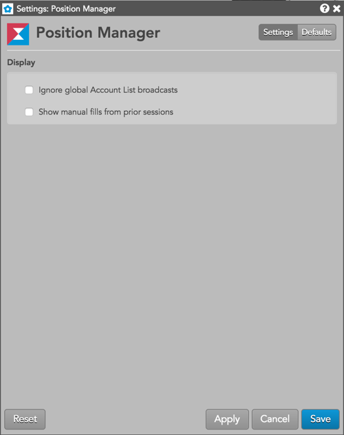

Right-click in the widget to open the context menu and select the following actions:
Available settings
These settings affect only the selected Position Manager widget. To update the default settings with these value for newly-opened Position Manager widgets, or to apply them to existing opened widgets, click Defaults.

Display settings
- Ignore global Account List broadcasts — {% include settings/ignore-acct-list.html %}
- Show manual fills from prior sessions — Sets whether to display previously published local manual fills. When the checkbox is checked, only local fills from the last seven days are displayed.
Column Descriptions
Position Manager columns:
- Date — The date the Local or Admin fill was published.
- Time — The time the Local or Admin fill was published.
- Column select checkbox — Check the checkbox to select a row to clone or modify.
- Action Button — Displays the reset button to delete SOD modifications without saving, and the delete button to delete manual fills.
- Contract — Find and select a contract by using the product search or market explorer. The settlement price for the selected contract appears in the Price column.
Account — Select an account for the manual fill. Only accounts assigned to you that have the "Update positions" permission checked in Setup are displayed. This is a required field for a manual fill or SOD.
- User — Optionally, select a user for the manual fill. Only users assigned to the account are displayed in the dropdown menu.
- Side — Select which side of the trade to apply the manual fill. Click "B" for Buy or "S" for Sell.
- Quantity — Enter a quantity for the manually filled order.
- Price — Enter a price for the manually filled order or SOD, or use the default settlement price for the selected contract.
- SOD — Add an SOD position.
- Use Settle — Select whether to use the current settlement price for the
contract.
- Status — Shows the manual fill or SOD status:
- Staged: An unpublished manual fill or SOD modification.
- Latest: A published manual fill or SOD modification.
- Exch — The name of the exchange where the contract is traded.